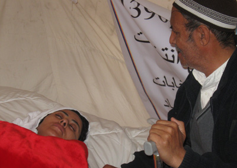

|
|
سیمین بارکزی: میمیرم تا عدالت زنده بماند
سه شنبه19 مهر 1390
سه شنبه 19 میزان 1390 ساعت 18:48 فرزاد

هشت صبح - سیمین بارکزی، نمایندهی مردم هرات در مجلس نمایندگان کشور که درپی رسیدگی دوباره به پروندههای انتخاباتی از سوی دادگاه اختصاصی از حضور در مجلس محروم شد و کمیسیون مستقل انتخابات نیز رحیمه جامی نامزد معترض را به جای وی، به مجلس نمایندگان معرفی کرد، در نهمین روز اعتصاب غذایی خود، رییس جمهور کرزی، مارشال قسیم فهیم معاون اول ریاست جمهوری، عبدالرووف ابراهیمی رییس مجلس نمایندگان و فضلاحمد معنوی رییس کمیسیون مستقل انتخابات را مسوولان مرگ احتمالی خود قلمداد کرد.
در وصیتنامهی خانم بارکزی که در اختیار رسانهها قرار داده شد، همچنین مرگ خود را در راه زنده کردن عدالت، افتخار خوانده است و از اعضای ایتلاف حمایت از قانون که وی عضویت آن را نیز دارد، خواسته است که پیکرش را در زیر همان خیمهای که وی درآنجا درحال اعتصاب به سر میبرد، دفن کنند.
همزمان با این، چندین تن از زنان عضو مجلس نمایندگان و مجلس سنا با گردهمایی در مقر شورای ملی، حمایتشان را از اعتصاب غذایی خانم بارکزی اعلام داشته و خواهان رسیدگی حکومت به خواستههای وی شدهاند.
زنان عضو در شورای ملی به رسانهها گفتند که وضعیت جسمی خانم بارکزی وخیم است و اگر به اعتصاب غذایی خود ادامه دهد، مرگ او حتمی میباشد.
خانم بارکزی از ده روز به این سو در اعتراض به سلب صلاحیت شدنش از سوی کمیسیون مستقل انتخابات تصمیم به اعتصاب غذایی گرفت و پزشکان معالج وی از وضعیت جسمی و روانی او ابراز نگرانی کردهاند.
هرچند خانم بارکزی پس از سلب صلاحیت شدنش از سوی کمیسیون مستقل انتخابات با عضویت در ایتلاف حمایت از قانون به مبارزات خود برای به دست آوردن دوبارهی کرسیاش ادامه داد، اما همزمان با تصمیمگیری اعضای ایتلاف برای حضور در نشستهای عمومی مجلس نمایندگان خانم بارکزی دست به اعتصاب غذایی زد و تاکید کرد تازمانی که به پروندهی انتخاباتی رسیدگی نشود، غذا نخواهند خورد.
در ده روز گذشته، به شمول کریم خلیلی معاون دوم ریاست جمهوری، شماری از وزیران و رییسان ادارههای مستقل حکومت برای پایاندادن اعتصاب غذایی خانم بارکزی به خیمهی او در نزدیکی پارلمان حضور یافتند، اما به گفتهی خانم بارکزی وی هرگونه معامله را به غیر از تامین عدالت، رد کرده است.
در همین حال، استاد قسیم اخگر مدیر مسوول 8صبح و از فعالان جامعه مدنی با حضور در خیمهی خانم بارکزی از شهامت و ایثارگری او در مقابل بیعدالتی ستایش کرد.
آقای اخگر که از بستر بیماری به عیادت خانم بارکزی رفته بود، چادر او را بوسید و گفت: «اعتصاب خانم بارکزی در واقع نشاندهنده شهامت، شجاعت و استواری یک زن است که به نمایندگی از تمام مردم افغانستان از ظلمی که بر مردان و زنان و جامعه میرود، شهادت میدهد.»
آقای اخگر در رابطه به بیتوجهی حکومت به خواست خانم بارکزی گفت: «هرگاه سیمین بارکزی یک تفنگوالا میبود به خواهشش در اولین روز پاسخ مثبت میدادند، ولی خانم بارکزی چون نه با تفنگ و نه با مسلسل بلکه با یک حربه مدنی و قانونی حق خود را میخواهد طبیعی است که هرگاه در جامعه افغانستان کسی با این وسایل مشورع خواستار حق خود شود، صدایش بیپاسخ میماند.»
پس از آن که کمیسیون مستقل انتخابات تغییرات 9 نفری را ماه گذشته در ترکیب مجلس نمایندگان اعلام کرد، حکومت به کمک نیروهای امنیتی آنان را به داخل مجلس نمایندگان وارد کرد.
در واکنش به این تصمیم حکومت، شماری از نمایندگان طرفدار حکومت در مجلس نمایندگان، در چارچوب مجمع پارلمانی اصلاحطلبان حمایتشان را از تغییرات به میان آمده اعلام کردند، اما اعضای ایتلاف حمایت از قانون که در گذشته نیز با هرگونه تغییر ترکیب مجلس نمایندگان مخالف بودند، آن تصمیم را مخالف قانون اساسی و قانون انتخابات خواندند.
درحال حاضر، اعضای ایتلاف حمایت از قانون، به میانجیگری رییسان شوراهای ولایتی به نشستهای عمومی این مجلس بازگشتهاند و تاکید کردهاند که به موضع گذشتهی خود مبنی بر غیرقانونی بودن حضور 9 عضو جدید در مجلس نمایندگان پافشاری دارند.
در همین حال سید منصور نادری نماینده ولایت بغلان شام روز گذشته گفت که از کرسی پارلمانش میگذرد و آن را به خانم بارکزی اعطا میکند.